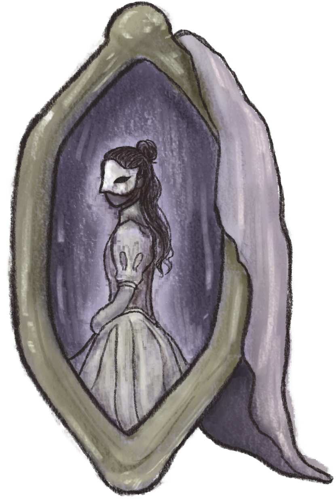

All Hallow's Masquerade
Fear the mask, for if you see it, it is already too late…
Game Introduction
The number of missing children on Halloween has increased exponentially in the past decade, with no explanation or evidence as to how they have gone missing. A local legend has spread among the young residents of the town that if you enter the local graveyard at midnight, there is rumored to be a mask that appears by the old gazebo that lies at the edge of the graveyard and the forest. Once you see it, it's already too late. The police lock up the graveyard each year to prevent kids and teens from entering, but they say there is nothing more that they can do since it's just a silly made-up legend… or so they thought.

It's been two years since Ophelia's little sister went missing. Her family urged the police to keep investigating, but the police had categorized her case as another one of the many missing children on Halloween. Since then, Ophelia's household had never been as quiet as it is now, as if all colors had been drained from their lives. Halloween, what once used to be a favorite family tradition, had died out. On the day of Halloween, Ophelia gets an invitation from a friend to a party happening late at night in the neighborhood, just past the graveyard.
Ophelia wakes up in a strange room to an unfamiliar voice. In the reflection of a rustic mirror, a woman in a gold-detailed gown and mask calls to Ophelia. She explains to her that on All Hallows' Eve, a portal opens connecting her world and this twisted dimension full of monsters. These monsters have been using the portal to harvest children for this grand masquerade ball feast, increasing their lifespan and allowing them to continue living this lavish life. Although it usually calls out to young children, it's strange this time that it called to Ophelia, which could mean there's a chance her sister is alive.
To open the portal from inside this dimension, Ophelia will need to collect four golden items, which may be scattered around the castle. Before Ophelia leaves, she warns her that it's extremely risky, and the portal will close for a whole year if she doesn't make it back in 24 hours. Determined, Ophelia needs to find answers, and by leaving now, she would regret it for the rest of her life. So, on a final note, she lends Ophelia her mask so that the other monsters won't recognize her, but warns Ophelia to avoid the ones in black masks at all costs.
Characters
Ophelia: A clever, seventeen-year-old girl. Like her sister, she has ruby-like hair and wears a sage green zip-up hoodie over a zombie bride outfit. In the other dimension, she also wears a white masquerade mask, given to her by the girl in the mirror. Her younger sister, Ruby, has been missing for two years on Halloween day, but deep down, she's still optimistic that her sister is still alive out there... somewhere...
Ruby: Ophelia's younger sister who has been missing for two years. She has bright ruby-colored hair and hazel-green eyes.
Characters From the Other Dimension
Girl in the Mirror: A girl in a gold-detailed gown and white mask whose soul is trapped in a rustic mirror. The mirror is stored away in this like attic/storage area. She is the first character Ophelia meets and shares important information with her about this world. Once she wishes u farewell, she gives u her mask disguise and disappears
The Joker: Very passionate about his show, always willing to be extra risky with stunts to make the best show ever, the type of person who would die for their work. Easily irritable when things don't go their way.He lets everyone know beforehand that he'll be giving away a golden tarot card to a star from the audience, so naturally, Ophelia volunteers to be a part of the show The main challenge of this part is to find ways to win his games because, unlike everyone else in the room, his tricks are dangerous for you. Even if it seems impossible, you can be clever enough to outsmart him,
The Fortune Teller: Wears a crescent-moon-like mask and a thick, dark purple velvet cloak. They have their own tent at the carnival, featuring cyan glowing constellations patterns on the tent and a table in the center for tarot readings. They already know Ophelia's identity and isn't a threat but instead willing to help her find items.
Swan Twins: Set of twins obsessed with being as pretty and elegant as swans. Dressed in an outfit and masks that resemble a swan. They are constantly bickering and trying to compete with each other. However, they have a lot of inside information and gossip, but that knowledge comes with a price. In exchange for information, they require many favors, very needy.
Ones in the Black Masks: They're essentially like guarding spirits of the palace. They have a creepy, black expressionless mask, and wear a black cloak. Even the guests get unsettling vibes from them... When they are pursuing a target, they transform into a monstrous second form.
Project Work
I worked on this project as a submission for a game jam, Scream Jam 2025. I had a Google Doc that I used to brainstorm my ideas for the theme and mechanics. I created a Trello board to keep track of my progress and schedule. All of my artwork was made in Krita. Overall, I would say my experience was a little rocky towards the end because I didn't have too much time to work on it, but I think it was a good learning experience for future game jams. Although I wasn't able to add much to it, I think I've set a really good starting place for this project and I'm looking forward to continuing with it.
Link to the Game Jam: https://itch.io/jam/scream-jam-2025
Link to the Game Page: https://allydonk.itch.io/all-hallows-masquerade